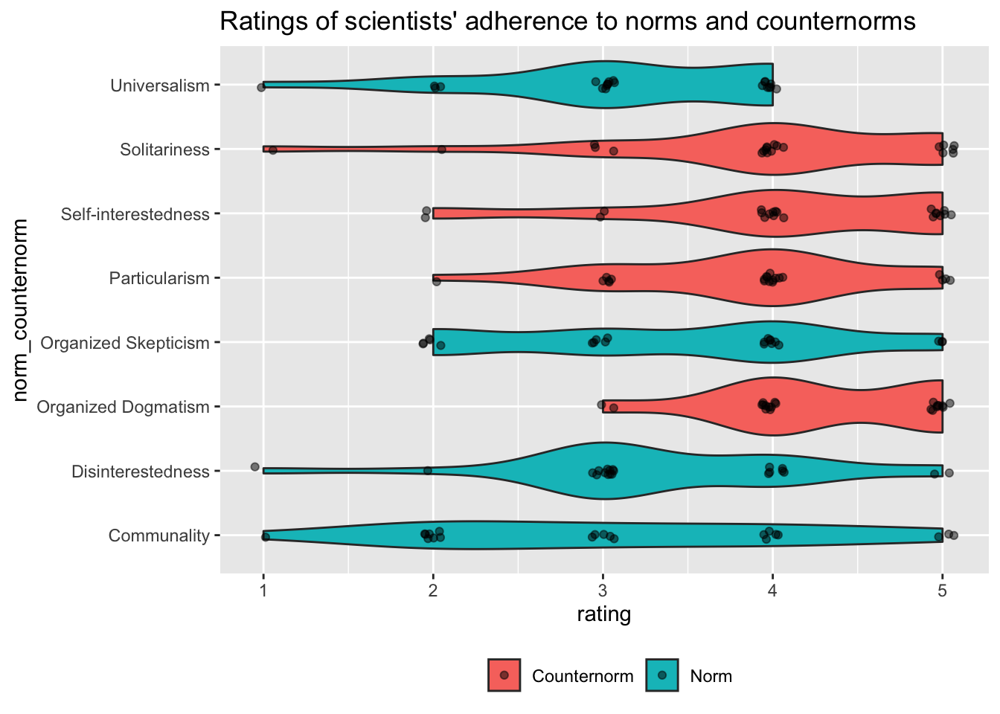

Survey 1 results
Purpose
This document summarizes the analysis of data for Survey 1 on scientific norms and counter-norms (https://forms.gle/1zqzfNNXWyCgiDSJ9).
This survey is part of the class discussion of adherence to norms and counternorms.
Background
The survey questions were derived from the Appendix in (Kardash & Edwards, 2012). We thank these authors for publishing the survey questions in their article so that we could reuse them for our class.
Set-up
We load the required R packages.
suppressPackageStartupMessages(library("tidyverse")) # for pipe %>%
suppressPackageStartupMessages(library("googledrive"))
suppressPackageStartupMessages(library("magrittr"))
suppressPackageStartupMessages(library("dplyr"))
suppressPackageStartupMessages(library("ggplot2"))Download data
Download the data file from the spreadsheet generated by the Google Form into a comma-separated value (CSV) file in a local directory called csv/.
Authenticate to Google.
googledrive::drive_auth(email = "rick.o.gilmore@gmail.com")if (!dir.exists('csv')) {
dir.create('csv')
}
csv_fn <- "csv/psych-490-2023-spring-survey-01.csv"googledrive::drive_download(file = 'PSYCH 490.002 Survey 1 (Responses)', path = csv_fn, type = 'csv', overwrite = TRUE)Clean data
Load the data file.
if (file.exists(csv_fn)) {
survey_01 <- readr::read_csv(csv_fn, show_col_types = FALSE)
} else {
message("File not found: ", csv_fn)
survey_01 <- NULL
}Examine the data set as a whole.
str(survey_01)## spc_tbl_ [21 × 10] (S3: spec_tbl_df/tbl_df/tbl/data.frame)
## $ Timestamp : chr [1:21] "10/21/2022 16:07:25" "1/10/2023 11:48:53" "1/12/2023 11:43:32" "1/12/2023 11:43:54" ...
## $ Scientists are generally motivated by the desire for knowledge and discovery, and not by the possibility of personal gain. : num [1:21] 3 4 3 3 3 4 3 3 5 3 ...
## $ Scientists make an attempt to consider all new evidence, hypotheses, theories, and innovations, even those that challenge or contradict their own work.: num [1:21] 2 2 3 4 3 4 2 2 5 3 ...
## $ Scientists generally assess new knowledge and its applications based on the reputation and past productivity of the individual or research group. : num [1:21] 4 3 4 3 4 4 3 4 4 4 ...
## $ Scientists openly share new findings with all colleagues. : num [1:21] 1 3 2 2 3 3 2 2 4 4 ...
## $ Scientists generally invest their careers in promoting their own most important findings, theories, or innovations. : num [1:21] 5 5 5 5 4 5 3 3 4 4 ...
## $ Scientists compete with others in the same field for funding and recognition of their achievements. : num [1:21] 2 5 4 2 5 4 4 4 3 5 ...
## $ Scientists generally evaluate research only on its merit (i.e., according to accepted standards of the field). : num [1:21] 4 4 3 4 3 2 3 4 2 3 ...
## $ Scientists emphasize the protection of their newest findings to ensure priority in publishing, patenting, or applications. : num [1:21] 2 4 4 1 5 3 4 4 4 5 ...
## $ If you wish to comment about the questions in this survey, you may do so here. You are not required to comment. : chr [1:21] "Test" NA NA NA ...
## - attr(*, "spec")=
## .. cols(
## .. Timestamp = col_character(),
## .. `Scientists are generally motivated by the desire for knowledge and discovery, and not by the possibility of personal gain.` = col_double(),
## .. `Scientists make an attempt to consider all new evidence, hypotheses, theories, and innovations, even those that challenge or contradict their own work.` = col_double(),
## .. `Scientists generally assess new knowledge and its applications based on the reputation and past productivity of the individual or research group.` = col_double(),
## .. `Scientists openly share new findings with all colleagues.` = col_double(),
## .. `Scientists generally invest their careers in promoting their own most important findings, theories, or innovations.` = col_double(),
## .. `Scientists compete with others in the same field for funding and recognition of their achievements.` = col_double(),
## .. `Scientists generally evaluate research only on its merit (i.e., according to accepted standards of the field).` = col_double(),
## .. `Scientists emphasize the protection of their newest findings to ensure priority in publishing, patenting, or applications.` = col_double(),
## .. `If you wish to comment about the questions in this survey, you may do so here. You are not required to comment.` = col_character()
## .. )
## - attr(*, "problems")=<externalptr>Examine the variable names.
if (is.null(survey_01)) {
warning("Error loading data file")
} else {
names(survey_01)
}## [1] "Timestamp"
## [2] "Scientists are generally motivated by the desire for knowledge and discovery, and not by the possibility of personal gain."
## [3] "Scientists make an attempt to consider all new evidence, hypotheses, theories, and innovations, even those that challenge or contradict their own work."
## [4] "Scientists generally assess new knowledge and its applications based on the reputation and past productivity of the individual or research group."
## [5] "Scientists openly share new findings with all colleagues."
## [6] "Scientists generally invest their careers in promoting their own most important findings, theories, or innovations."
## [7] "Scientists compete with others in the same field for funding and recognition of their achievements."
## [8] "Scientists generally evaluate research only on its merit (i.e., according to accepted standards of the field)."
## [9] "Scientists emphasize the protection of their newest findings to ensure priority in publishing, patenting, or applications."
## [10] "If you wish to comment about the questions in this survey, you may do so here. You are not required to comment."These variable names are too long to be useful. Let’s look at the source publication (Kardash & Edwards, 2012) to see if we can simplify them in a useful way.
So, the Appendix labels each question with a short phrase and notes whether the concept is a norm (N) or counter-norm (CN). Let’s rename the variables using the single words.
new_names <-
c(
"Timestamp",
"Disinterestedness",
"Organized Skepticism",
"Particularism",
"Communality",
"Organized Dogmatism",
"Self-interestedness",
"Universalism",
"Solitariness",
"Comments"
)
# Make new data frame with long and short names for reference
survey_qs <- tibble(q_long = names(survey_01), q_short = new_names)
# Swap out old (long) names for new (short) names
names(survey_01) <- new_namesThese data are ‘wide’, meaning that there are multiple variables for each respondent. The data will be easier to visualize and analyze if we make the data ‘longer’.
survey_01_long <- survey_01 %>%
tidyr::pivot_longer(.,
!c('Timestamp', 'Comments'),
names_to = "norm_counternorm",
values_to = "rating")We should indicate whether these are norms, and label them “N”, or counternorms, and label them “CN”.
survey_01_long <- survey_01_long %>%
dplyr::mutate(., type = if_else(
norm_counternorm %in% c(
"Disinterestedness",
"Organized Skepticism",
"Communality",
"Universalism"
),
"Norm",
"Counternorm"
))Finally, there is a “test” set of responses that I used to test this data processing workflow. We should delete those responses since they are nonsensical–I just hit random buttons to make some data.
survey_01_long_clean <- survey_01_long %>%
dplyr::filter(., is.na(Comments))Visualize data
What participants were asked
Perceptions of scientific practices
The following statements reflect different values about how the scientific research community should function, according to studies of scientists’ work. Use the scale below to indicate the extent to which you personally feel it ACTUALLY REPRESENTS the behavior of most scientists.
Source: Kardash, C. M. & Edwards, O. V. (2012). Thinking and behaving like scientists: Perceptions of undergraduate science interns and their faculty mentors. Instructional Science, 40(6), 875–899. https://doi.org/10.1007/s11251-011-9195-0.
survey_qs %>%
kableExtra::kable(., format='html')| q_long | q_short |
|---|---|
| Timestamp | Timestamp |
| Scientists are generally motivated by the desire for knowledge and discovery, and not by the possibility of personal gain. | Disinterestedness |
| Scientists make an attempt to consider all new evidence, hypotheses, theories, and innovations, even those that challenge or contradict their own work. | Organized Skepticism |
| Scientists generally assess new knowledge and its applications based on the reputation and past productivity of the individual or research group. | Particularism |
| Scientists openly share new findings with all colleagues. | Communality |
| Scientists generally invest their careers in promoting their own most important findings, theories, or innovations. | Organized Dogmatism |
| Scientists compete with others in the same field for funding and recognition of their achievements. | Self-interestedness |
| Scientists generally evaluate research only on its merit (i.e., according to accepted standards of the field). | Universalism |
| Scientists emphasize the protection of their newest findings to ensure priority in publishing, patenting, or applications. | Solitariness |
| If you wish to comment about the questions in this survey, you may do so here. You are not required to comment. | Comments |
Rating distribution
Remember, the rating scale was from 1: “not at all” to 5: “a great deal”.
survey_01_long %>%
ggplot() +
aes(norm_counternorm, rating, fill = type) +
geom_violin() +
geom_point(position = position_jitter(width = .07, height = .07), alpha = 0.5) +
coord_flip() +
ggtitle("Ratings of scientists' adherence to norms and counternorms") +
theme(legend.position = "bottom") +
theme(legend.title = element_blank())
survey_01_long %>%
ggplot() +
aes(type, rating, fill = type) +
geom_violin() +
geom_point(position = position_jitter(width = .07, height = .07), alpha = 0.5)survey_01 %>%
dplyr::mutate(., n_cum = seq_along(Timestamp)) %>%
dplyr::mutate(., Timestamp = lubridate::mdy_hms(survey_01$Timestamp)) %>%
ggplot() +
aes(Timestamp, n_cum) +
geom_point() +
geom_line()